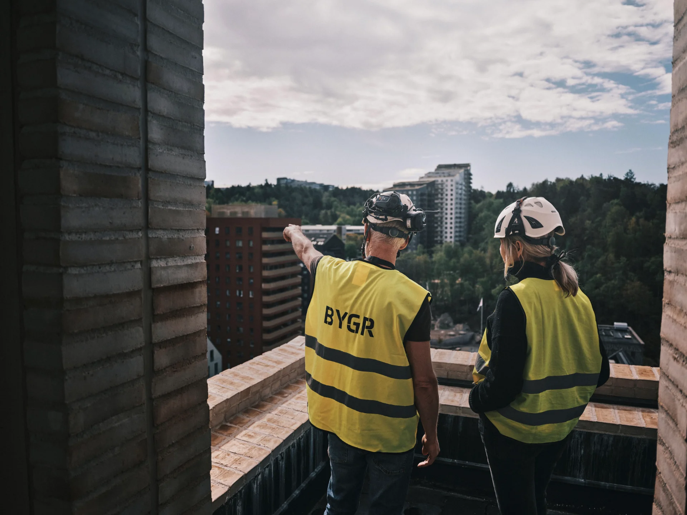

Se projektet
Se projektetWoolpower
Industrifastighet · Woolpower AB
Totalentreprenader med prefabricerade stommar. För bostäder, verksamheter och hela kvarter.
Det är hur väl vi bygger tillsammans.
BYGR tar sig an stora totalentreprenader med en nära organisation och korta beslutsvägar. Vår kärna är prefabricerade flerbostadshus, där erfarenhet och samordning får varje del att fungera i helheten.
Mer om människorna bakom BYGREn portfölj av bostäder, verksamheter
och nya delar av staden.

Tre hus. Fem trapphus. 204 hyresrätter. Ett helt kvarter där samordning och prefab möts i byggprocessen.
Se projektetIndustrifastighet · Woolpower AB
 Se projektet
Se projektet189 hyresrätter · Wallenstam
Vi bygger med våra beställare. Kunskapen om produktionen tar plats tidigt, så att funktion, resurser och genomförande kan utvecklas tillsammans.
Utforska vårt arbetssättEtt sammanhållet uppdrag med fokus på samordning. Vi tar oss an större bostadsprojekt och verksamhetsbyggnader, i nära dialog med beställare och samarbetspartners.
Vår kärnkompetens. Erfarenheten av prefabricerade byggdelar och stora bostadsprojekt ger oss ett genomarbetat sätt att planera och driva produktionen.
Beställare och entreprenör arbetar mot gemensamma mål. Öppen dialog, transparens och tidig kunskapsdelning ger förutsättningar för ett konstruktivt samarbete.

Bra projekt börjar med att vi förstår varandra.
Projektledning, platsledning, ekonomi och administration arbetar nära varandra hos BYGR. Tillsammans med beprövade underentreprenörer och partners håller vi ihop de stora uppdragen.
Möt BYGR”De korta beslutsvägarna och snabba svaren utmärker BYGR.”
”Det offererade priset och den uppsatta tidsramen hölls helt enligt kontraktet.”
BYGR MARK
Schakt, dränering, VA och finplanering. Med BYGR Mark kan fler delar av projektet hållas ihop, från förberedelserna under ytan till den färdiga utemiljön.
Upptäck BYGR Mark
Västsverige är hemma. Projektets förutsättningar visar vägen vidare.
Vi bygger där våra beställare vill bygga. Verksamheten har också utökats med ett norskt bolag för uppdrag i Norge.
Prata med oss om ditt projektEn idé, en fastighet eller ett konkret projekt?
Låt oss prata om vad vi kan åstadkomma tillsammans.